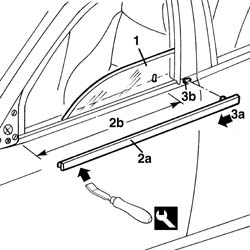

7005D26 front side descending window glass scraper (outer) r r
- Path
- Procedures > 70 FITTINGS > 7005 PASSENGER COMPARTMENT FRONT SIDE DOORS > 7005D front side door window glasses > 7005D26 front side descending window glass scraper (outer) r r
- Kind
- repair procedure (removal / refitting; the operation number is the code)
- Applies to
- all engines; all production periods
- Interactive page
- https://sloeber94.github.io/elrnDB-a156/en/#/3238598
Applies to: all engines; all production periods
 Removing
Removing
 Refitting
Refitting7005E12 corner cover of one front side door, lh or rh r r
7005R30 electrically controlled door mirror (one) - r+r
1. Lower the window completely.
2. Starting from the front end, using the appropriate tool, remove the outer glass scraper trim (2a) along the section shown (2b).
 | Name | Country |
|---|---|---|
2a | Scraper blade | 1.823.014.000 |
3. Pull the glass scraper in the direction of the arrow (3a), removing it from the slot (3b).

Applies to: all engines; all production periods
Refitting
RemovingCheck that the outer weather strip is undamaged.
With the window lowered, insert the rear retainer for the glass scraper in the slot in the door and align the rear end with the door profile.
Fit the glass scraper starting from the rear.
Check that the window works properly.
Topics linked from this page (2)
- 7005E12 corner cover of one front side door, lh or rh r r
- 7005R30 electrically controlled door mirror (one) - r+r